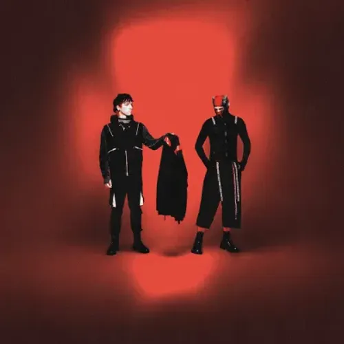

Galerie
Retrouvez dans cette galerie différentes images liées à la musique, aux artistes, aux instruments et aux concerts.
Alan Walker
Alan Walker, ayant autrefois utilisé le pseudonyme DJ Walkzz, est un DJ, auteur-compositeur et producteur britannico-norvégien, né le 24 août 1997 à Northampton (Midlands de l'Est). Après ses débuts en 2012, son morceau instrumental Fade, réalisé en 2014, fait sensation après avoir été mis en ligne sur YouTube, lui permettant de signer un contrat avec le label NoCopyrightSounds. Par la suite, ses titres Spectre ou Force sont aussi remarqués, mais c'est une version vocale de Fade, baptisée Faded (avec la chanteuse Iselin Solheim), qui rencontre le succès.
Eminem
Eminem (souvent stylisé EMINƎM), de son vrai nom Marshall Bruce Mathers III (né le 17 octobre 1972 à Saint Joseph, dans le Missouri), est un rappeur, auteur-compositeur, producteur et acteur américain. Il est reconnu pour avoir popularisé le hip-hop parmi les classes moyennes et supérieures des États-Unis et est acclamé par la critique comme l'un des plus grands rappeurs de tous les temps.

Imagine Dragon
Imagine Dragons est un groupe de pop rock américain, originaire de Las Vegas dans le Nevada, et formé en 2008. Avec sept albums au total, le groupe totalise 74 millions d’albums vendus et 160 milliards de streams dans le monde entier. Remportant trois American Music Awards, dix Billboard Music Awards et un Grammy Award en 2014, Imagine Dragons est devenu l'un des groupes de pop-rock les plus emblématiques de cette dernière décennie.

Twenty one Pilots
Imagine Dragons est un groupe de pop rock américain, originaire de Las Vegas dans le Nevada, et formé en 2008. Avec sept albums au total, le groupe totalise 74 millions d’albums vendus et 160 milliards de streams dans le monde entier. Remportant trois American Music Awards, dix Billboard Music Awards et un Grammy Award en 2014, Imagine Dragons est devenu l'un des groupes de pop-rock les plus emblématiques de cette dernière décennie.